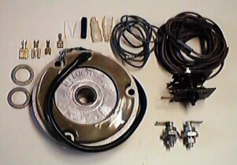
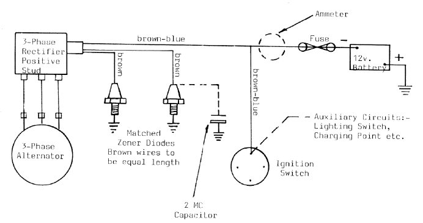

This picture shows what is included in this kit.The following information is taken from the fitting instructions provided by Mistral Engineering.
Introduction
The High Output 3-Phase Alternator is a development by Lucas Electrical Ltd.
to achieve a high charge rate at low R.P.M. Used in conjunction with the
correct control circuit, this Alternator will replace any Lucas Aternator of
the same physical size (e.g. RM 19, RM 21 etc.). The Aternator produces 180
watts (at 12.5v.) and 85% full output is produced at 2,400 R.P.M.
Because of the higher current being produced, a matched pair of Zener Diodes are employed to conduct the surplus current to earth under low load conditions. Also, the existing wiring from the Rectifier to the Zener Diode, Ignition Switch and Fuse may not be adequately rated and we have therefore supplied replacement wiring of these in the kit.
When the new Rectifier and Zener Diodes have been mounted, it will be necessary to cut the wires to length and fit the terminals supplied. It is important to make sound, low resistance connections. If you do not have the correct crimping tools, solder the wire to the terminal or take it to an auto-electrician.
Fitting
1· DO NOT remove the existing Alternator at this stage.
2. Mount one of the new Zener Diodes to an identical heat sink as the existing one. It is important that the Zener is fixed to a flat, machined aluminium surface and it is advisable to lightly smear the joint face with silicone grease. The correct tightening torque is 2.0-2.3 Ib.ft. (0.3 kg.m.).
3. Discard the existing Zener and replace it with the other new one. The motorcycle can be used at this stage by connecting the original wiring onto this Zener Diode. NOTE Once Stage 4 is started, you cannot use the machine until completion.
4. Mount the new 3-Phase Rectifier ensuring that it makes a good earth to the frame. When tightening the nut, the Rectifier must be held by a spanner on the 2 flats at the top. It must not be held by the plates as damage will occur if they turn.
5. Fit the wiring supplied, to the large spade of the Rectifier. Run the 2 brown wires to the Zzener Diodes via a route where they can be taped to the existing loom. Ensure that these wires will be equal in length within 100 mm (4") before cutting.
6. Disconnect the battery earth. Run one brown-blue wire to the Fuseholder, cut to length and connect. Run the other brown-blue wire to the Ignition Switch, cut to length and connect in replacement of the existing brown-blue. Examine the manufacturer's wiring diagram. On some models the brown-blue must go to the Ammeter, not directly to the Fuseholder. Use 28/0.3 mm. wire from the Ammeter to the Fuseholder.
7. Remove the old Stator and the Rotor nut. Line up the Rotor Timing Mark with a fixed point and remove the old Rotor, slide on the new Rotor and check that the Timing Mark aligns exactly. Fit the new Stater and check that the Rotor will lie approximately centrally within it. Use the washer supplied if necessary. On some machines the Rotor nut has a cylindrical section to go in the rotor and if the bike originally had a wide Rotor it is essential to check that the nut does not bottom against the shaft before clamping the new Rotor. If necessary turn or file the nut to prevent bottoming. Before finally securing the Stator ensure there is 0.45 mm. (18 thou.) clearance between each pole piece and the Rotor.
N.B. If necessary, waist the studs or bolts slightly to achieve this clearance.
8. Cut the green wire supplied to the same length as the two existing harness Alternator/Rectifier wires. Fit lucar and cover. Tape all three together and connect to Rectifier and Alternator. They can fit onto the Rectifier in any order.
9. Reconnect the battery earth with the ignition switched off. If any current flows when this connection is made there is a fault which must be rectified first.

This page was written and designed by F. H. Eaton & Associates if you have any questions or comments please contact us at info@fheaton.com